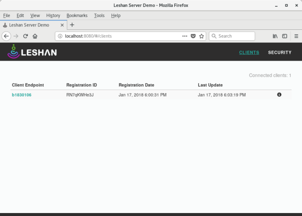
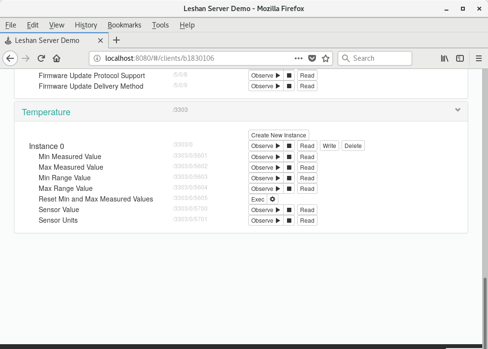
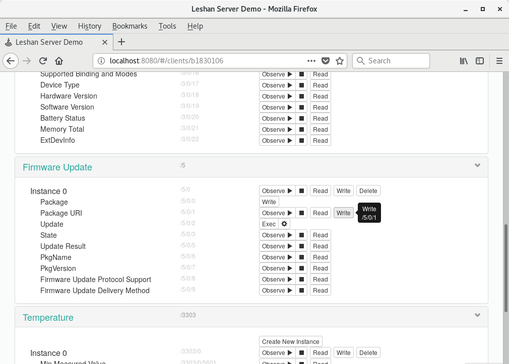
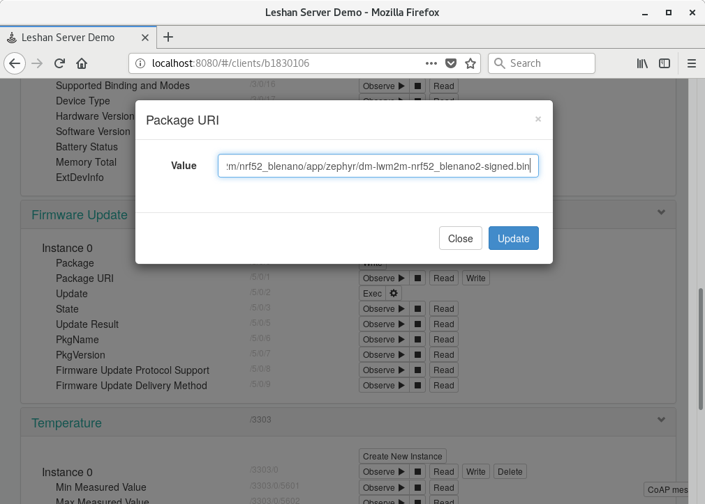
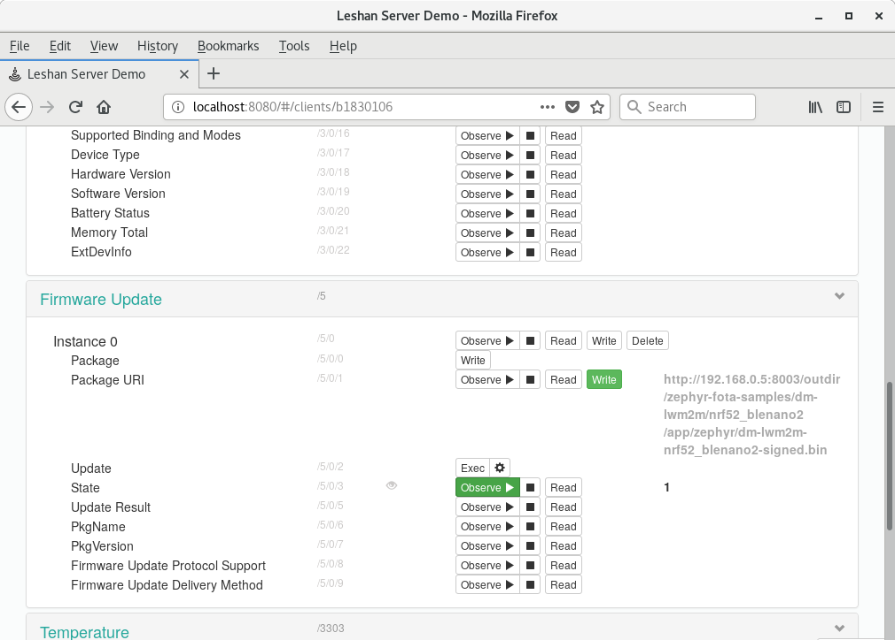
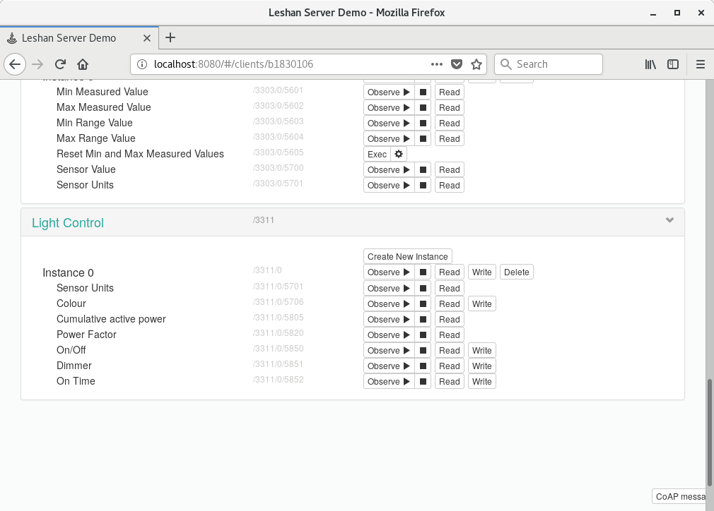

OMA Lightweight M2M (LWM2M) offers a firmware object interface for directing client devices to download and apply firmware updates. Using the Zephyr microPlaform and Eclipse’s Leshan Demo Server, this seemingly complex process can be demonstrated in a few easy steps.
To illustrate how a firmware update is delivered via LwM2M, you will make a small change to the Zephyr microPlatform (ZMP) LwM2M sample project which disables the Light Control object. When flashed to an embedded device, the Leshan UI will be missing the “Light Control” portion near the bottom of the client detail page. Once this “bug” is found, you will fix the LwM2M sample, recompile and deliver your updated firmware as an over the air (OTA) update. The new firmware can be confirmed by locating the “Light Control” object in the Leshan UI.
Hardware Requirements
- Redbear Labs Nano v2 (nRF52) connected to your developer host machine.
- A device running the Linux microPlatform (LMP) to be configured as an LwM2M gateway.
Software Requirements
Before you begin, set up the LWM2M system described in the microPlatforms Getting Started Tutorial. (These instructions were tested with the 0.7 public release of the microPlatforms; the LWM2M instructions may move in future versions.)
Initial setup of the LwM2M client device
Create a “bug” in the Zephyr microPlatform LwM2M sample
From the base directory of the Zephyr microPlatform, the LwM2M sample source code is located at: zephyr-fota-samples/dm-lwm2m. Make the following changes to disable instance 0 of the “Light Control” object:
diff --git a/prj.conf b/prj.conf
index 48abe3c..f19d284 100644
--- a/prj.conf
+++ b/prj.conf
@@ -47,7 +47,7 @@ CONFIG_LWM2M_COAP_BLOCK_SIZE=256
CONFIG_LWM2M_FIRMWARE_UPDATE_PULL_COAP_PROXY_SUPPORT=y
CONFIG_LWM2M_IPSO_SUPPORT=y
CONFIG_LWM2M_IPSO_TEMP_SENSOR=y
-CONFIG_LWM2M_IPSO_LIGHT_CONTROL=y
+# CONFIG_LWM2M_IPSO_LIGHT_CONTROL is not set
CONFIG_SYS_LOG_LWM2M_LEVEL=3
# Logging
Build and flash the sample to the BLE Nano 2
Use the following commands from the base directory of the ZMP:
./zmp build --board nrf52_blenano2 zephyr-fota-samples/dm-lwm2m
./zmp flash --board nrf52_blenano2 zephyr-fota-samples/dm-lwm2m
Confirm that Leshan UI displays your connected device
Open your own Leshan Demo Server instance in a web browser using the following URL: http://localhost:8081
Find the BLE Nano 2 under the “Client Endpoint” list. The endpoint is generated semi-randomly using unique data from the device to ensure that each endpoint name is unique.

Click on it to view all of the available LwM2M objects. You should be able to confirm that “Light Control” object is not present at the bottom of the list.

Fix the “bug” and deploy an OTA update
Re-enable “Light Control”
diff --git a/prj.conf b/prj.conf
index 48abe3c..f19d284 100644
--- a/prj.conf
+++ b/prj.conf
@@ -47,7 +47,7 @@ CONFIG_LWM2M_COAP_BLOCK_SIZE=256
CONFIG_LWM2M_FIRMWARE_UPDATE_PULL_COAP_PROXY_SUPPORT=y
CONFIG_LWM2M_IPSO_SUPPORT=y
CONFIG_LWM2M_IPSO_TEMP_SENSOR=y
-# CONFIG_LWM2M_IPSO_LIGHT_CONTROL is not set
+CONFIG_LWM2M_IPSO_LIGHT_CONTROL=y
CONFIG_SYS_LOG_LWM2M_LEVEL=3
# Logging
Rebuild the LwM2M sample
./zmp build --board nrf52_blenano2 zephyr-fota-samples/dm-lwm2m
Start an HTTP server to host the new firmware
Start a docker contained HTTP server to host the new firmware binary from the base of the Zephyr microPlatform.
docker run -dit -p 8003:80 -v $(pwd):/usr/share/nginx/html --name nginx opensourcefoundries/nginx:latest
You can use a web browser to confirm the following url will download the new firmware: http://{developer host IP}:8003/outdir/zephyr-fota-samples/dm-lwm2m/nrf52_blenano2/app/zephyr/dm-lwm2m-nrf52_blenano2-signed.bin
NOTE: Be sure to use your local IP address and not “localhost” as this URL will be used on the embedded device.
Use Leshan UI to trigger a firmware download
Open your own Leshan Demo Server instance in a web browser using the following URL: http://localhost:8081
Look for the BLE Nano 2 client endpoint and click on it. Under the “Firmware Update” section do the following:
- Click on the “Write” button next to “Package URI”
- Paste the above firmware URI as the “Value”
- Click “Update”


If you can monitor the UART output of the BLE Nano 2, you should notice that the firmware is now being downloaded.
Instead of using UART, you can use Leshan UI to watch the “State” field of the “Firmware Update” object by clicking on it’s “Observe” button. During the download, this should be a value of 1, and once complete, the value should change to 2. Any other value indicates a problem downloading the firmware.

Trigger the firmware update
Once the “Status” shows a value of 2 (or you’ve reached 100% by watching the UART log), you can tell the device to apply the update by clicking on the “Exec” button next to the “Update” resource. In Leshan, the device’s detail page may be reloaded briefly while the device reboots and reconnects.
Once reloaded, you should notice that the “Light Control” block is now back at the bottom of the page.

Your update is now complete.